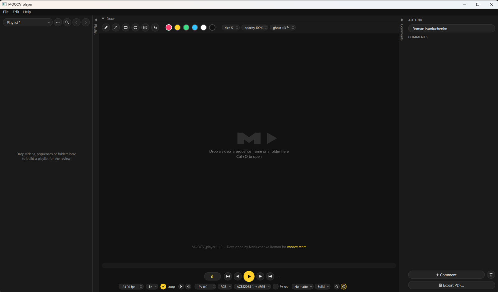

A fast, quiet player for VFX review. Videos and image sequences, EXR layers in ACES, drawing on frames, comments and PDF reports — in one window.

Videos and image sequences read ahead in parallel and kept in RAM. Network files load in the background without freezing.
Layers (AOVs) and channels, ACEScg and ACES2065-1 views for sRGB and Rec.709, the colour space read from the file.
Stack versions with blend modes, opacity and a split wipe. Playlists and an edit mode for the whole review.
Brush with pen pressure, arrows, shapes and reference images. Every drawing is a numbered comment on its frame.
Saved automatically next to the media file, so the next person who opens the shot sees them.
One page per comment with the frame, drawing, timecode, author and file — ready to send to the team.
On a Mac the app is not signed yet: the first time, right-click it and choose Open.